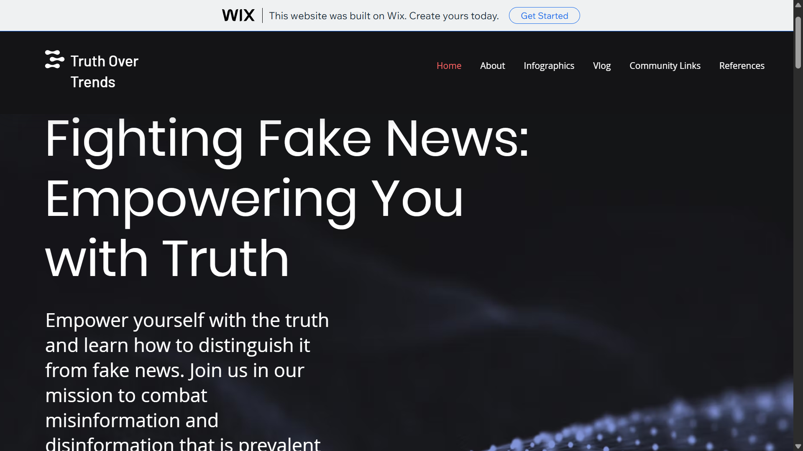
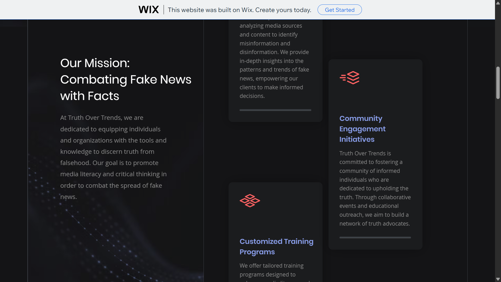
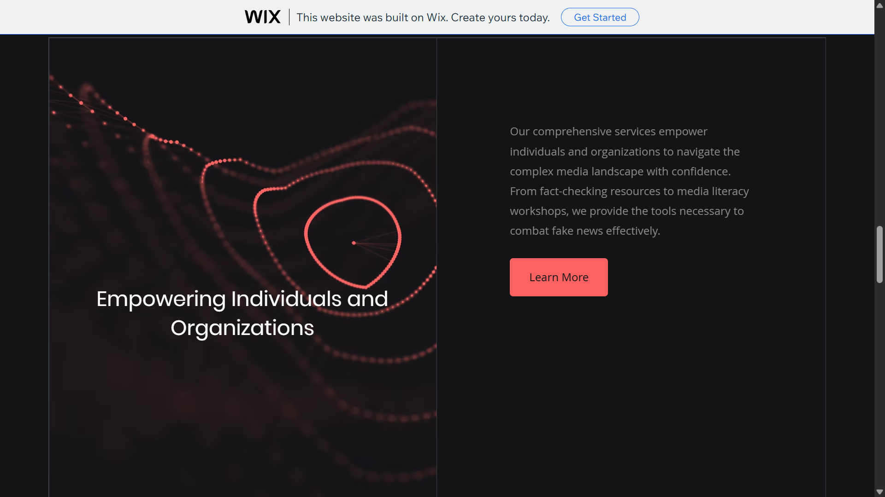
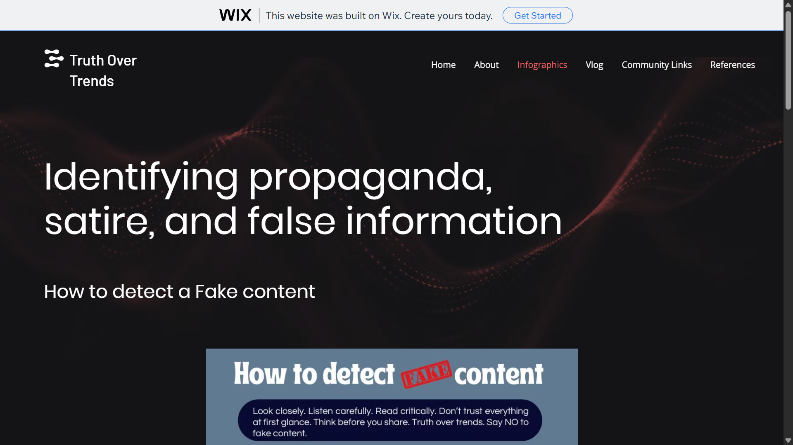
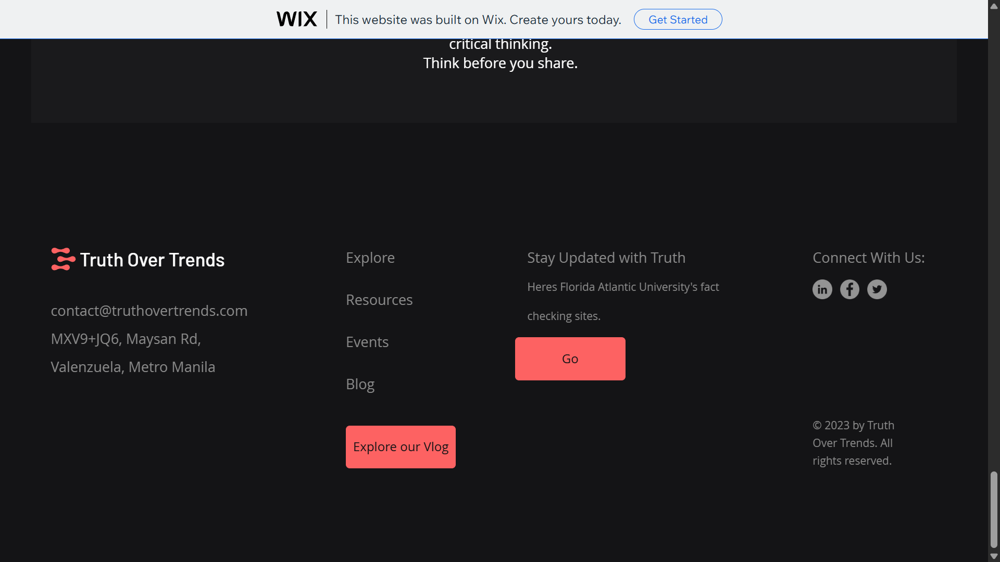

Web Development
Truth Over Trends





OVERVIEW
Truth Over Trends is a digital platform and blog dedicated to exploring social issues, personal growth, and authentic living. Built using the Wix ecosystem, this project focused on rapid deployment and high-end visual curation. The goal was to create a clean, trustworthy environment where complex ideas—like the impact of social media and the value of truth—could be presented in a modern, digestible format.
KEY FEATURES
- Template Customization: I took a foundational template and heavily modified the visual hierarchy, color palette, and typography to align with the "Truth Over Trends" brand identity.
Editorial-Style Landing Page: Featured high-impact hero sections and a "Featured Posts" carousel to guide the reader's journey from the moment they land on the site.
Interactive Social Integration: Strategic placement of social sharing tools and comment sections to encourage reader engagement and dialogue.
WHAT I LEARNED
- The Speed of No-Code Development: This project taught me the value of rapid prototyping. I learned how to move from a concept to a live, functional website in a fraction of the time it would take to hard-code, which is essential for testing market-fit or content ideas.
Visual Consistency & Branding: Even when using a template, maintaining a consistent "vibe" across multiple pages is a challenge. I learned how to strictly adhere to a specific font pairing and color scheme to make the site feel like a single, unified brand.
TOOLS USED
Wix